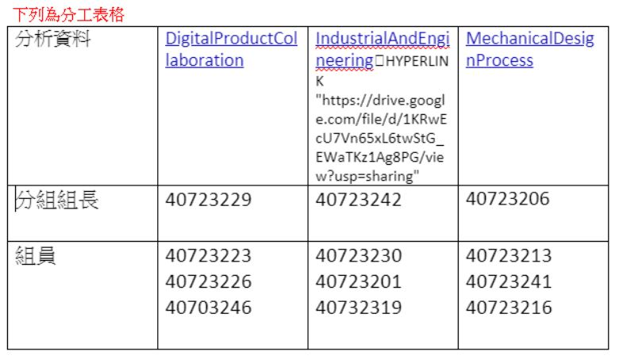
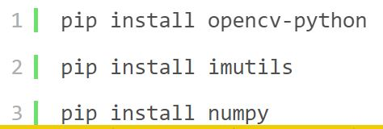
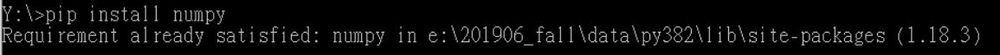

week1-5 <<
Previous Next >> week10-14
week6-9
week6
進度報告
下載這個軟體，它可用來錄製個人的螢幕內容且能同時錄製自己的頭像
OBS下載網址:https://obsproject.com/download
第二次直播會議

week7
四輪車的基本外型設置
※作業一(4輪車)
*根據主題 0 和主題 1 的素材，您能否具體描述機械設計團隊，為了完成作業四輪機器人需要做些什麼?
四輪車馬達設定及鍵盤控制加速及轉彎
利用Vrep 實施模擬

步驟:
1.先add<primitive shape<導入車體形狀
且導入後左方工作列因該會呈現下方的樣態

2.調整位置
若需精準調整位置時可以，不須拖拉，可以直接輸入

3.調整車體大小
可以依照下方圖示更改車體大小

4.馬達調整功率
藉由勾選motor properties以啟動馬達，並可以藉由調整轉動速度和力矩達到所想要馬達轉動之效果，底下的lock motor when target velocity is zero則可以使馬達速度為零時鎖定住馬達

5.檢查碰撞
物件的動力學設定也必須要設定好，如下方所示物體的碰撞和物體的動態都必須打開，才能使剛剛設定好的馬達進行對輪胎的帶動

- 貼上撰寫好的鍵盤控制轉彎程式

week8
安裝三個模組




利用Meet來錄製開會內容
week9
期中考周
week1-5 <<
Previous Next >> week10-14